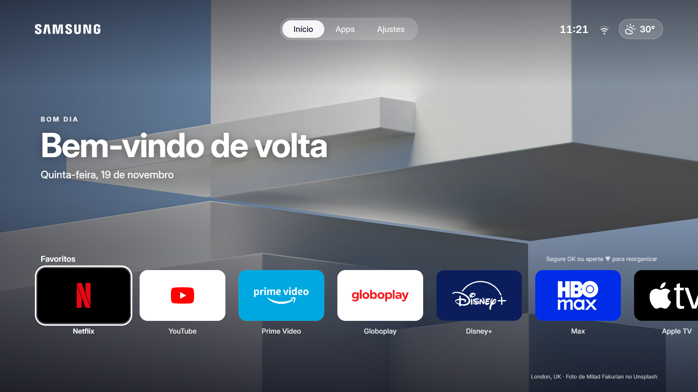

Dusk TV
v2.1Uma tela inicial limpa e rápida para Smart TVs Samsung, LG e Android TV.
Fotos que mudam sozinhas, seus apps com os logos de verdade, relógio, Wi-Fi e clima. Sem propaganda.
Samsung Tizen
LG webOS beta
Android TV beta
